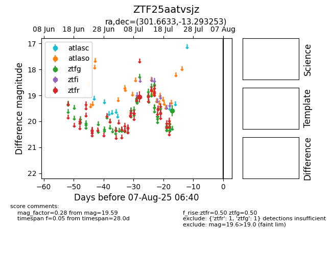

Target ZTF25aatvsjz at 2025-08-07 07:30, see:
FINK: fink-portal.org/ZTF25aatvsjz
Lasair: lasair-ztf.lsst.ac.uk/objects/ZTF25aatvsjz
ALeRCE: alerce.online/object/ZTF25aatvsjz
alt names
ZTF25aatvsjz (ztf,fink)
coordinates:
equatorial (ra, dec) = (301.6633,-13.29325)
galactic (l, b) = (29.1065,-22.58347)
photometry
last ztfg=19.59, ztfr=19.06
1 ztfg, 1 ztfr detections
